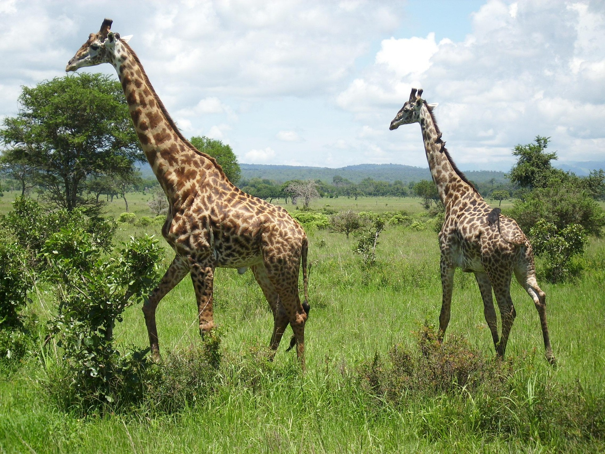

Las jirafas habitan en sabanas, pastizales y bosques abiertos en África. Son herbívoras y se alimentan de hojas de árboles y arbustos que otros animales no alcanzan.
Duermen muy poco, alrededor de dos horas al día, y permanecen en constante movimiento para evitar depredadores. Su patrón de manchas les ayuda a camuflarse en su entorno.